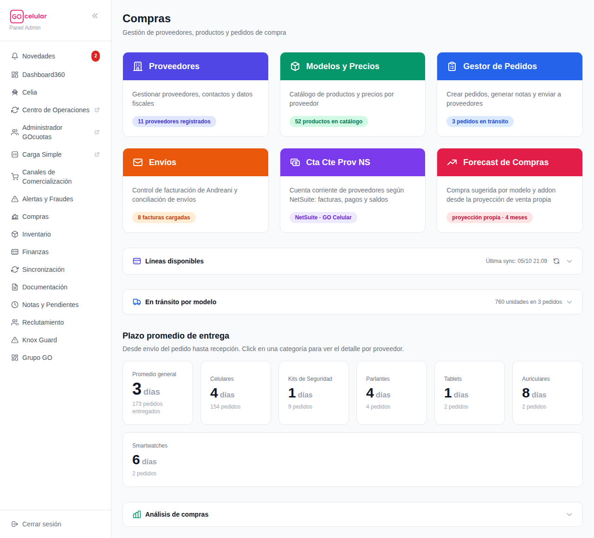
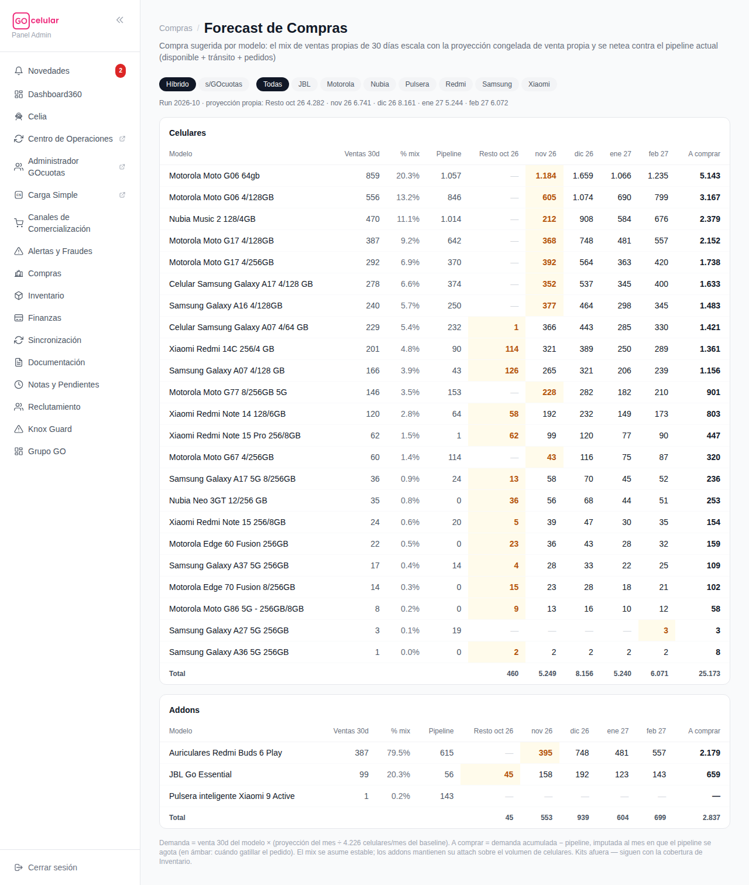
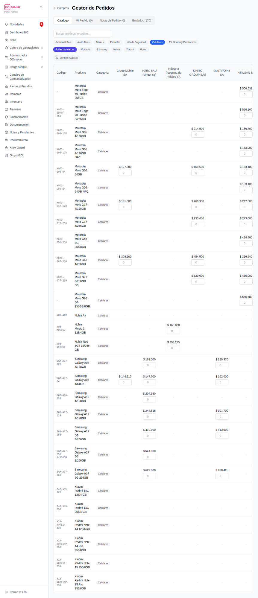
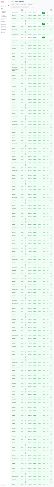

<title>Manual — Compras: las 6 tarjetas y cómo hacer un pedido</title>
<style>
  :root {
    --bg: #fcfcfa;
    --surface: #ffffff;
    --ink: #221e28;
    --muted: #6d6678;
    --line: #e9e4ee;
    --accent: #c21a5f;
    --accent-soft: #fdeef4;
    --bono: #6d28d9;
    --bono-soft: #f3eefe;
    --ok: #047857;
    --ok-soft: #ecfdf3;
    --warn: #b45309;
    --warn-soft: #fff7e8;
    --danger: #be123c;
    --danger-soft: #fef1f3;
    --chip: #f4f1f7;
  }
  @media (prefers-color-scheme: dark) {
    :root:not([data-theme="light"]) {
      --bg: #17141b; --surface: #201c26; --ink: #efeaf3; --muted: #a79fb3;
      --line: #352f3d; --accent: #f06ba3; --accent-soft: #3a1f2d;
      --bono: #b49afc; --bono-soft: #2c2440; --ok: #4ade80; --ok-soft: #16301f;
      --warn: #fbbf24; --warn-soft: #362a12; --danger: #fb7185; --danger-soft: #3b1c24;
      --chip: #2a2531;
    }
  }
  :root[data-theme="dark"] {
    --bg: #17141b; --surface: #201c26; --ink: #efeaf3; --muted: #a79fb3;
    --line: #352f3d; --accent: #f06ba3; --accent-soft: #3a1f2d;
    --bono: #b49afc; --bono-soft: #2c2440; --ok: #4ade80; --ok-soft: #16301f;
    --warn: #fbbf24; --warn-soft: #362a12; --danger: #fb7185; --danger-soft: #3b1c24;
    --chip: #2a2531;
  }
  * { box-sizing: border-box; }
  body {
    background: var(--bg); color: var(--ink);
    font: 16px/1.65 system-ui, -apple-system, "Segoe UI", Roboto, sans-serif;
    margin: 0; padding: 0 20px 80px;
  }
  main { max-width: 880px; margin: 0 auto; }
  h1, h2, h3 { line-height: 1.25; text-wrap: balance; }
  h1 { font-size: 2rem; margin: 40px 0 6px; }
  h2 { font-size: 1.45rem; margin: 56px 0 4px; padding-top: 16px; border-top: 3px solid var(--accent); }
  h3 { font-size: 1.05rem; margin: 26px 0 8px; }
  p { margin: 10px 0; }
  .sub { color: var(--muted); margin: 0 0 8px; }
  .meta { font-size: .8rem; color: var(--muted); }
  .eyebrow { text-transform: uppercase; letter-spacing: .09em; font-size: .72rem; font-weight: 700; color: var(--accent); }

  nav.toc { display: flex; flex-wrap: wrap; gap: 8px; margin: 22px 0 10px; position: sticky; top: 0; background: var(--bg); padding: 12px 0; z-index: 5; border-bottom: 1px solid var(--line); }
  nav.toc a { font-size: .82rem; font-weight: 600; color: var(--ink); text-decoration: none; background: var(--chip); border: 1px solid var(--line); border-radius: 999px; padding: 5px 12px; }
  nav.toc a:hover, nav.toc a:focus-visible { border-color: var(--accent); color: var(--accent); outline: none; }

  table { border-collapse: collapse; width: 100%; font-size: .9rem; }
  .tablewrap { overflow-x: auto; border: 1px solid var(--line); border-radius: 12px; background: var(--surface); margin: 14px 0; }
  th { text-align: left; font-size: .72rem; text-transform: uppercase; letter-spacing: .05em; color: var(--muted); padding: 10px 14px; border-bottom: 1px solid var(--line); }
  td { padding: 9px 14px; border-bottom: 1px solid var(--line); vertical-align: top; }
  tr:last-child td { border-bottom: none; }

  ol.pasos { counter-reset: paso; list-style: none; padding: 0; margin: 14px 0; display: grid; gap: 10px; }
  ol.pasos li { counter-increment: paso; background: var(--surface); border: 1px solid var(--line); border-radius: 12px; padding: 12px 16px 12px 54px; position: relative; }
  ol.pasos li::before {
    content: counter(paso); position: absolute; left: 14px; top: 12px;
    width: 28px; height: 28px; border-radius: 999px; background: var(--accent); color: #fff;
    display: grid; place-items: center; font-weight: 800; font-size: .9rem;
  }
  .callout { border-radius: 12px; padding: 12px 16px; margin: 14px 0; border: 1px solid; font-size: .93rem; }
  .callout.oro { background: var(--warn-soft); border-color: var(--warn); }
  .callout.tip { background: var(--ok-soft); border-color: var(--ok); }
  .callout.ojo { background: var(--danger-soft); border-color: var(--danger); }
  .callout b:first-child { display: block; margin-bottom: 2px; }

  figure { margin: 18px 0; }
  figure .frame { max-height: 540px; overflow-y: auto; border: 1px solid var(--line); border-radius: 12px; background: var(--surface); }
  figure img { display: block; width: 100%; height: auto; }
  figcaption { font-size: .8rem; color: var(--muted); margin-top: 6px; }

  .pill { display: inline-block; font-size: .76rem; font-weight: 700; border-radius: 999px; padding: 2px 10px; }
  .pill.vig { background: var(--ok-soft); color: var(--ok); }
  .pill.ven { background: var(--chip); color: var(--muted); }
  .pill.rojo { background: var(--danger-soft); color: var(--danger); }
  .pill.ambar { background: var(--warn-soft); color: var(--warn); }
</style>

<main>
  <p class="eyebrow">GOcelular360 · Manual operativo</p>
  <h1>🛒 Compras — las 6 tarjetas y cómo hacer un pedido de punta a punta</h1>
  <p class="sub">Qué es, para qué sirve y cómo se usa cada tarjeta de la página <b>Compras</b>, con el proceso completo de un pedido: del <b>Forecast</b> (cuánto comprar) al <b>Gestor</b> (pedirlo, recibirlo e informarlo). Pensado para operar sin ayuda.</p>
  <p class="meta">Actualizado el 6/10/2026 · Las capturas son reales; los números que veas al entrar van a ser los del día.</p>

  <nav class="toc">
    <a href="#mapa">🧭 Las 6 tarjetas</a>
    <a href="#forecast">🔮 Forecast</a>
    <a href="#gestor">📝 Gestor de Pedidos</a>
    <a href="#circuito">🔁 El circuito completo</a>
    <a href="#oro">⭐ Reglas de oro</a>
  </nav>

  <h2 id="mapa">🧭 Las 6 tarjetas en un vistazo</h2>
  <div class="tablewrap"><table>
    <tr><th>Tarjeta</th><th>Qué es</th><th>Cuándo la usás</th></tr>
    <tr><td>🏢 <b>Proveedores</b> (índigo)</td><td>La agenda de proveedores: contactos, teléfono/mail y datos fiscales. A cada proveedor se le marca qué tipo de producto vende.</td><td>Alta de un proveedor nuevo o actualizar un contacto. Los datos de acá alimentan el WhatsApp/mail del Gestor.</td></tr>
    <tr><td>📦 <b>Modelos y Precios</b> (esmeralda)</td><td>El catálogo de productos y el <b>precio de cada proveedor</b> para cada modelo, con su historial de actualizaciones.</td><td>Cuando un proveedor pasa lista nueva de precios, o hay que dar de alta un modelo/código. ⚠ El código conviene cargarlo con el <b>SKU real de GOcelular</b> (evita problemas al informar pedidos).</td></tr>
    <tr><td>📝 <b>Gestor de Pedidos</b> (azul)</td><td><b>La tarjeta central</b>: acá se arman los pedidos, se mandan a los proveedores y se les hace el seguimiento hasta que la mercadería entra al stock.</td><td>Cada vez que hay que comprar. Explicada a fondo abajo ⬇️.</td></tr>
    <tr><td>✉️ <b>Envíos</b> (naranja)</td><td>El control de todo lo que viaja con Andreani: facturas, demoras, arrepentimientos, rescates y siniestros.</td><td>Posventa y conciliación. Tiene <b>su propio manual</b>: botón "📖 Manual operativo" adentro.</td></tr>
    <tr><td>💳 <b>Cta Cte Prov NS</b> (violeta)</td><td>La cuenta corriente de los proveedores según NetSuite: facturas, pagos y saldos.</td><td>Para verificar cuánto se le debe a un proveedor antes de pedirle más, o cruzar una factura.</td></tr>
    <tr><td>🔮 <b>Forecast de Compras</b> (rosa)</td><td>La compra sugerida por modelo, calculada desde la proyección de venta propia.</td><td><b>Antes de armar un pedido</b>: te dice qué comprar, cuánto y cuándo. Explicada abajo ⬇️.</td></tr>
  </table></div>
  <figure>
    <div class="frame"></div>
    <figcaption>📸 La página <b>Compras</b> — cada tarjeta muestra un contador vivo (pedidos en tránsito, productos en catálogo, etc.).</figcaption>
  </figure>

  <h2 id="forecast">🔮 Forecast de Compras: cuánto comprar y cuándo</h2>
  <p><b>Qué es:</b> una tabla que para cada modelo calcula la <b>demanda esperada de los próximos meses</b> (lo que vamos a vender según la proyección) y la compara contra lo que ya tenemos en el circuito. De ahí sale la columna mágica: <b>A comprar</b>.</p>
  <p><b>Para qué:</b> que el pedido no se arme "a ojo". El forecast dice qué modelos, cuántas unidades y <b>en qué mes</b> hay que gatillar la compra.</p>
  <h3>Cómo leer la tabla</h3>
  <ul>
    <li>📈 <b>Venta/día</b>: a qué ritmo se vendió ese modelo en los últimos 30 días (tienda propia).</li>
    <li>📦 <b>Pipeline</b>: todo lo que ya está en el circuito = disponible + en tránsito + pedidos ya hechos. La demanda se descuenta de esto.</li>
    <li>🛒 <b>A comprar por mes</b>: lo que falta comprar una vez que el pipeline se agota. La celda <span class="pill ambar">ámbar</span> es el <b>primer mes con compra</b>: ahí hay que disparar el pedido (contando que el proveedor tarda en entregar).</li>
    <li>🔀 Las píldoras <b>Híbrido / GOcuotas</b> son dos métodos de proyección distintos. <b>Mirá los dos</b> y usalos como rango: el más bajo es el piso, el más alto el techo. Si son parecidos, confianza alta; si difieren mucho, comprá más cerca del piso y consultá.</li>
    <li>🎧 Los <b>addons</b> (auriculares, parlantes, etc.) tienen su propia tabla: acompañan el volumen de celulares. Los <b>kits de seguridad NO están acá</b> (se regalan; su reposición se mira en Inventario).</li>
  </ul>
  <div class="callout tip"><b>💡 El forecast también vive dentro del Gestor</b>Cuando estés armando el pedido en el catálogo del Gestor, vas a ver la sugerencia del forecast al lado de cada modelo — no hace falta ir y volver anotando en papel.</div>
  <figure>
    <div class="frame"></div>
    <figcaption>📸 <b>Forecast de Compras</b> — la celda ámbar marca el mes en que hay que gatillar cada compra.</figcaption>
  </figure>

  <h2 id="gestor">📝 Gestor de Pedidos: el proceso completo</h2>
  <p><b>Qué es:</b> la herramienta con la que se compra. Tiene 4 solapas que son las 4 etapas de un pedido: <b>Catálogo</b> (elegir) → <b>Mi Pedido</b> (el carrito) → <b>Notas de Pedido</b> (confirmar y mandar) → <b>Enviados</b> (seguir hasta que entra al stock).</p>

  <h3>Etapa 1 — 🗂️ Catálogo: elegir productos y proveedor</h3>
  <p>Es una grilla de <b>productos × proveedores</b>: cada columna es un proveedor y en cada celda ves <b>su precio</b> para ese modelo. Esto te deja comparar precios de un vistazo.</p>
  <ol class="pasos">
    <li>Filtrá por categoría (Celulares, Tablets, Auriculares…) y marca, o buscá por nombre/código.</li>
    <li>Para cada modelo que haya que comprar (según el forecast), escribí la <b>cantidad en la celda del proveedor elegido</b>. Regla práctica: el proveedor habitual de cada marca (Newsan→Motorola, IATEC/Mirgor→Samsung, Solnik→Xiaomi, R. Fueguina→Nubia), salvo diferencia de precio importante.</li>
    <li>Podés repartir un mismo modelo entre varios proveedores: cantidad en cada columna.</li>
    <li>Agregá al pedido. El contador de la solapa <b>Mi Pedido</b> va sumando.</li>
  </ol>
  <figure>
    <div class="frame"></div>
    <figcaption>📸 <b>Catálogo</b> del Gestor — un precio por proveedor y el casillero de cantidad debajo.</figcaption>
  </figure>

  <h3>Etapa 2 — 🛒 Mi Pedido: revisar el carrito</h3>
  <ol class="pasos">
    <li>Entrá a <b>Mi Pedido</b> y repasá: modelos, cantidades, proveedor y precio de cada línea. Acá todavía se puede corregir o borrar lo que sea.</li>
    <li>Cuando está todo, tocá <b>Generar notas</b>: el sistema separa el carrito en <b>una nota de pedido por proveedor</b> (si compraste a 3 proveedores, salen 3 notas).</li>
  </ol>

  <h3>Etapa 3 — 📨 Notas de Pedido: confirmar y mandar</h3>
  <ol class="pasos">
    <li>Cada nota arranca como <b>borrador</b>. Revisala y tocá <b>Confirmar</b>.</li>
    <li>Mandala al proveedor con el botón de envío: <b>WhatsApp</b> (abre el chat del contacto con el mensaje ya armado: modelos, cantidades y precios), <b>Email</b>, o <b>PDF</b> para descargar/imprimir.</li>
    <li>Marcá por qué vía la mandaste — la nota pasa a <b>Enviado</b> y aparece en la solapa Enviados.</li>
  </ol>

  <h3>Etapa 4 — 🚚 Enviados: del proveedor al stock</h3>
  <p>Acá vive el seguimiento. El filtro de estado tiene tres momentos: <b>En tránsito</b> (el proveedor todavía no entregó) → <b>Recibido</b> → <b>Ingresado a stock</b>.</p>
  <ol class="pasos">
    <li>Cuando el proveedor entrega la mercadería, marcá el pedido como <b>entregado/recibido</b>.</li>
    <li>Pedile al proveedor el <b>Excel con los IMEIs</b> (para tablets, números de serie) y subilo en el pedido. Sin ese archivo no se puede informar.</li>
    <li>Tocá <b>“Informar a GOcelular”</b>: esto le avisa al sistema del depósito qué unidades exactas entraron (IMEI por IMEI). El chip muestra el avance:
      <span class="pill ven">sin informar</span> → <span class="pill vig">informado</span> → <span class="pill vig">ingresado al stock ✓✓</span> (Andreani ya lo recibió físicamente).</li>
    <li>Avisos que podés ver y qué hacer: <i>“SKUs pendientes de alias”</i> = nada, lo resuelve GOcelular solo. <span class="pill ambar">⚠ marcado ingresado · Andreani recibió X/Y</span> = el depósito recibió menos unidades de las informadas → avisar a Emiliano/Pedro. Si el informe da <b>error</b>, no insistas con reintentos: avisá (los reenvíos llevan una referencia nueva y los maneja el sistema).</li>
  </ol>
  <figure>
    <div class="frame"></div>
    <figcaption>📸 <b>Enviados</b> — cada pedido con su estado y el chip del informe a GOcelular.</figcaption>
  </figure>

  <h2 id="circuito">🔁 El circuito completo (resumen de memoria)</h2>
  <ol class="pasos">
    <li>🔮 <b>Forecast</b>: mirar qué modelos tienen compra en el mes ámbar, con ambos métodos como rango.</li>
    <li>🗂️ <b>Gestor → Catálogo</b>: cargar esas cantidades en la celda del proveedor correcto.</li>
    <li>🛒 <b>Mi Pedido</b>: revisar → <b>Generar notas</b> (una por proveedor).</li>
    <li>📨 <b>Notas de Pedido</b>: Confirmar → enviar por WhatsApp/mail/PDF.</li>
    <li>🚚 <b>Enviados</b>: al llegar la mercadería → marcar recibido → subir Excel de IMEIs → <b>Informar a GOcelular</b> → verificar <span class="pill vig">ingresado al stock ✓✓</span>.</li>
  </ol>
  <div class="callout oro"><b>⭐ Tiempos de entrega reales</b>Los proveedores entregan en mediana ~3-4 días, pero 1 de cada 10 pedidos tarda ~13, y los pedidos grandes a Newsan (500+ unidades) tardaron 16-23 días varias veces. Para volúmenes grandes, gatillar el pedido con más anticipación que la que sugiere el mes ámbar.</div>

  <h2 id="oro">⭐ Reglas de oro (resumen para la heladera)</h2>
  <div class="tablewrap"><table>
    <tr><th></th><th>Regla</th></tr>
    <tr><td>1️⃣</td><td>El pedido nace en el <b>Forecast</b>, no a ojo. Mes <span class="pill ambar">ámbar</span> = gatillar ya; dos métodos = piso y techo.</td></tr>
    <tr><td>2️⃣</td><td><b>Una nota por proveedor</b> — el sistema las separa solo al generar. No mezclar proveedores a mano.</td></tr>
    <tr><td>3️⃣</td><td>Un pedido no está terminado cuando llega la caja: está terminado cuando el chip dice <span class="pill vig">ingresado al stock ✓✓</span>.</td></tr>
    <tr><td>4️⃣</td><td><b>Nunca informar a GOcelular sin el Excel del proveedor</b> (IMEIs; tablets con números de serie).</td></tr>
    <tr><td>5️⃣</td><td>"Pendientes de alias" = tranquilo, se resuelve solo. <span class="pill ambar">⚠ Andreani recibió X/Y</span> o un error al informar = avisar a Emiliano/Pedro, no reintentar a lo loco.</td></tr>
    <tr><td>6️⃣</td><td>Los <b>kits de seguridad no están en el Forecast</b> (se regalan): su reposición se controla desde Inventario.</td></tr>
    <tr><td>7️⃣</td><td>Antes de un pedido grande, chequear el saldo del proveedor en <b>Cta Cte Prov NS</b>.</td></tr>
    <tr><td>8️⃣</td><td>Lista nueva de precios del proveedor → actualizar <b>Modelos y Precios</b> ANTES de armar el pedido (el Gestor usa esos precios). Códigos nuevos: siempre con el SKU real de GOcelular.</td></tr>
  </table></div>

  <p class="meta" style="margin-top:40px">Manual generado desde el código y la pantalla real de GOcelular360 · dudas de fondo: Emiliano · este documento se regenera cuando cambia la página.</p>
</main>
